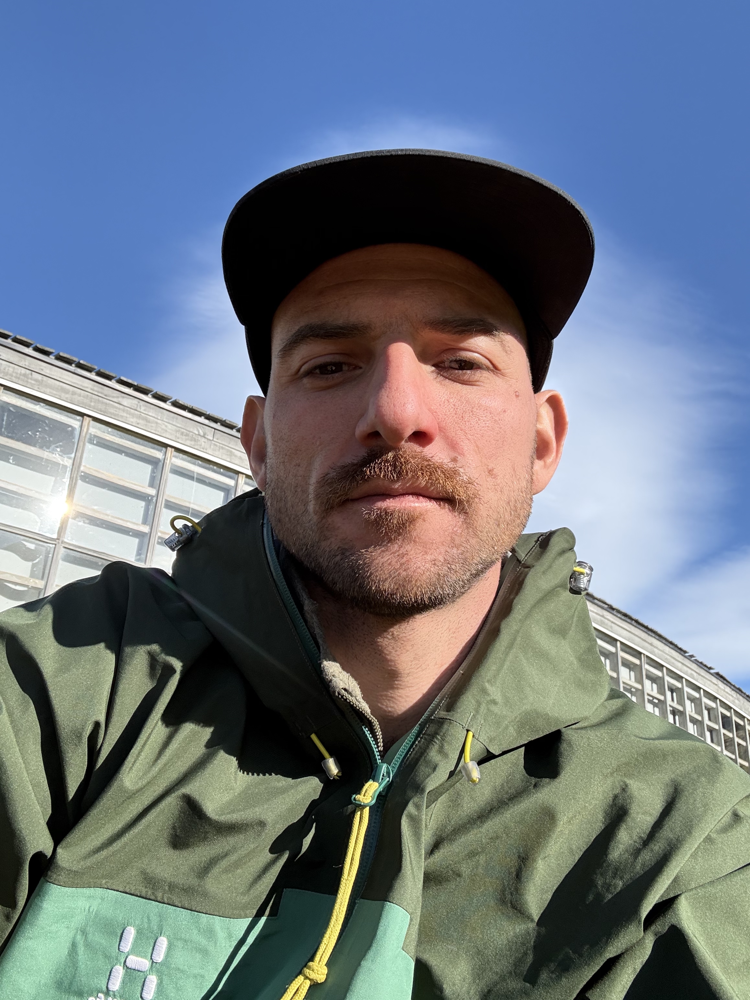
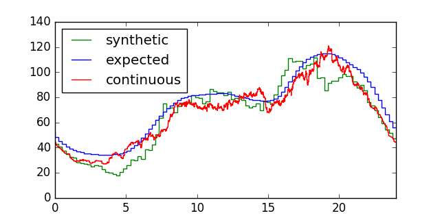
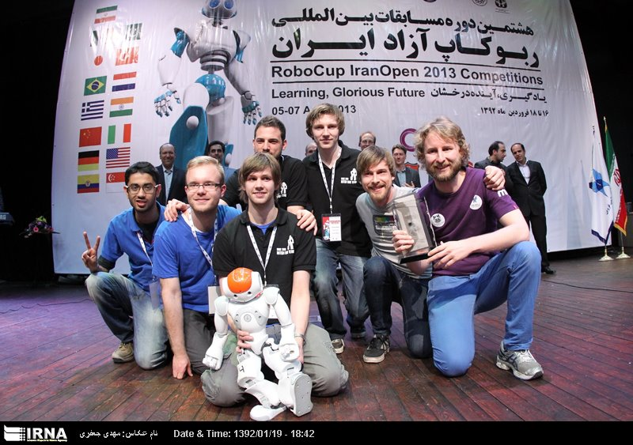

Georgios Methenitis
PhD. Artificial Intelligence
Senior Machine Learning Engineer @ Sennder
Barcelona, Spain
Welcome to my personal webpage
My interests focus on multi-agent systems (learning, mechanism design, game-theory), e-commerce and double-sided market settings, design of pricing mechanisms (e.g., auctions) in settings with supply and/or demand uncertainty, analysis of emergent market behavior via agent-based simulation, game theoretical analysis of pricing strategies in competitive markets, and evolutionary algorithms.
News
- Feb. 2023 I took on a new role as a Senior Data Scientist at Sennder in Barcelona.
- Oct. 2021 I started working at BEAT, a company that is part of the FREE NOW group. Company shuts download operations in Latin America market in Nov. 2022 (link)
- Jul. 2020 On Wednesday 15th of July, I defended my PhD thesis with title: Agent Interactions & Mechanisms in Markets with Uncertainties. Video here:
- Oct. 2019 My paper "Degrees of Rationality in Agent-Based Retail Markets" was accepted for publication in the Springer journal Computational Economics.
- Oct. 2019 I started working at Machine Learning Programs.
- Jan. 2019 My paper "Forecast-Based Mechanisms for Demand Response" was accepted for publication in the proceedings of AAMAS 2019.
- Oct. 2018 The full version of my last paper "SLA-Mechanisms for Electricity Trading under Volatile Supply and Varying Criticality of Demand" has been accepted for publication in the SpringerOpen journal Energy Informatics under the title "Renewable Electricity Trading through SLAs".
- Jan. 2017 My paper "SLA-Mechanisms for Electricity Trading under Volatile Supply and Varying Criticality of Demand" has been accepted for publication as an extended abstract in the Proceedings of the 16th International Conference on Autonomous Agents and Multiagent Systems (AAMAS2017).
- Oct. 2016 An extended abstract of my last paper "Incentivizing Intelligent Customer Behavior in Smart-Grids: A Risk-Sharing Tariff & Optimal Strategies" was accepted for publication in the proceedings of BNAIC 2016 in Amsterdam.
- Jun. 2016 Check out this video of evolved soft robots to walk on different gravity levels:
Based on the results of my master thesis, presented at GECCO '15: Publication, GitHub project
- Apr. 2016 My paper "Incentivizing Intelligent Customer Behavior in Smart-Grids: A Risk-Sharing Tariff & Optimal Strategies" was accepted for publication in the proceedings of IJCAI 2016.
- Feb. 2016 You can download the source code for my publication, “A Multi-Scale Energy Demand Model Suggests Sharing Market Risks with Intelligent Energy Cooperatives” (MIT license), here: SLP-Demand_Decomposition_Tool

The tool loads an electricity standard load profile from a CSV file and generates synthetic data at different scales. - Sep. 2015 My paper "A Multi-Scale Energy Demand Model suggests sharing Market Risks with Intelligent Energy Cooperatives" was accepted for publication in the proceedings of ISGT-Asia 2015 an IEEE Power and Energy Society International Conference (IEEE-PES).
- Mar. 2015 My paper "Novelty Search for Soft-Robotic Space Exploration" was accepted for publication in the proceedings of GECCO 2015.
- Feb. 2015 I accepted a full-time position at Centrum Wiskunde & Informatica (CWI) in Amsterdam as a PhD. candidate.
- Dec. 2014 I successfully defended my master thesis with title "Evolution of Soft-Robots by Novelty Search" at the University of Amsterdam.
- Sep. 2013 My paper "Orientation Finding using a Grid based Visual Compass" was accepted for publication on the proceedings of BNAIC 2013.
Curriculum Vitae
I graduated from the Technical University of Crete with a Diploma in Electronic and Computer Engineering in 2012, and a Master's degree in Artificial Intelligence from the University of Amsterdam in 2014.

Dutch Nao Team places third in Robocup Iran Open 2013As a MS.c. student I was a Teaching Assistant and a member of the Dutch Nao Team, a student team participating in the RoboCup - Standard Platform League.
I conducted my MS.c. thesis (Novelty search for soft-robotic space exploration) in collaboration with the European Space Agency, where I worked in the Advanced Concepts Team during the summer of 2014.
In February 2015, I started my Ph.D research at the Centrum Wiskunde & Informatica in Amsterdam and the Delft University of Technology. I defended my doctorate dissertation on the 15th of July 2021.
From Oct. 2019 to Sep. 2021, I worked as a Senior Data Scientist at Machine Learning Programs, focusing on machine learning applications in insurance markets (e.g., competitive price predition, claim propensity models).
From Sep. 2021 to January 2023, I worked as a Data Scientist at BEAT, focusing on analysis and development of dynamic pricing strategies.
Since Feb. 2023, I am working as a Senior Machine Learning Engineer at Sennder, focusing on prototyping and productionization of pricing models in the logistics domain.
You can download my CV here:
Updated: Jan. 2026
Publications
- Degrees of Rationality in Agent-Based Retail Markets. Springer Computational Economics, 2019
- Forecast-Based Mechanisms for Demand Response. International Conference on Autonomous Agents and Multiagent Systems (AAMAS), 2019
- Renewable electricity trading through SLAs. Springer Energy Informatics, 2018
- SLA-Mechanisms for Electricity Trading under Volatile Supply and Varying Criticality of Demand. International Conference on Autonomous Agents and Multiagent Systems (AAMAS), 2017
- Incentivizing Intelligent Customer Behavior in Smart-Grids: A Risk-Sharing Tariff & Optimal Strategies. International Joint Conference on Artificial Intelligence (IJCAI), 2016
- A multi-scale energy demand model suggests sharing market risks with intelligent energy cooperatives. Smart Grid Technologies - Asia (ISGT ASIA), IEEE Innovative Smart Grid Technologies - Asia, 2015
- Novelty Search for Soft Robotic Space Exploration. Proceedings of the 2015 Annual Conference on Genetic and Evolutionary Computation, 2015
- Evolution of Soft Robots by Novelty Search. Master's thesis, University of Amsterdam, The Netherlands, 2014
- Orientation finding using a grid based visual compass. Belgium Netherlands Artificial Intelligence Conference, 2013
- Player Behavior and Team Strategy for the RoboCup 3D Simulation League. Diploma thesis, Technical University of Crete, Greece, 2012
Contact
Email: giorgos [dot] methe [at] gmail [dot] com